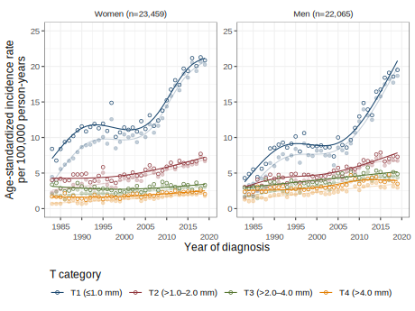

Trends in Invasive Melanoma Thickness in Norway, 1983–2019
Raju Rimal
Oslo Centre for Biostatistics and Epidemiology (OCBE)
Department of Biostatistics, UiO
Presented at: Cancer Registry of Norway
30 October 2024
Background

Why this study and what we know
Understanding melanoma trends is:
- crucial for prevention and treatment strategies
- allocating resources effectively and
- prepare tailored interventions based on recent data
Tumour thickness
- Tumour thickness is the most important prognostic factor
- More thinner tumours are diagnosed than thicker
Research Objective
Describe population-based long-term trends in melanoma incidence and tumour thickness as well as by sex, age, calendar period, residential region, and anatomic site.
Case series
Data from Cancer Registry of Norway
- All histologically verified first primary invasive melanoma
- Variables: tumour thickness, sex, age at diagnosis, vital status, anatomic site, histopathological subtype

Tumour thickness categories

Source: https://www.cancerresearchuk.org/about-cancer/melanoma/stages-types/tnm-staging
Basic characteristics of data
Age and Thickness
| 1983-1999 | 2008-2019 | |
|---|---|---|
| Age at diagnosis, Median (Q1, Q3) | ||
| Women | 56 (42, 71) | 63 (50, 75) |
| Men | 59 (46, 71) | 67 (56, 76) |
| Tumour thickness, Median (Q1, Q3) | ||
| Women | 1 (0.6, 2) | 0.9 (0.5, 1.8) |
| Men | 1.3 (0.74, 2.8) | 1 (0.6, 2.3) |
Missing tumour decreased from 3,714 (26.3%) in 1983–1999 to 1,742 (7.7%)
Notes
Women: 23,459 (52%) and Men: 22,065 (48%)
Increased age at diagnosis
Reduced Tumour thickness at diagnosis
Men were diagnsed at older age and thicker tumour than women
Analysis &
Results
Methods
▢ Multiple imputation
▢ Age-adjusted incidence rates
▢ Segmented regression
Melanoma incidence trend
By sex and T category
Increased incidence rates in all T-categories
T1 melanoma trend
- 1983–1989/90: Steep rise
- 1990–2004: Plateau
- 2005–2019: Sharp increase again

Melanoma incidence trend
By anatomic site
Overall:
T1 melanoma had the highest incidence across all sites.
Overall:
T1 plateau was not seen for all sites.
In women:
High and increasing incidence on the trunk and lower limbs with plateau in T1.
In men:
Highest incidence in trunk but lower incidence in lower limbs than women.
In men:
Higher and increasing head/neck incidence compared to women, mainly in thicker melanoma.
Melanoma incidence trend
By histopathological subtype
Superficial spreading
- Mirrors overall pattern.
- Higher in women than men.
- Stable/ decreasing trend in thicker melanoma.
- Increasing T2 in the recent years.
Nodular
- Higher incidence of thicker melanoma.
- Higher in men than women.
- Stable/decreasing recent incidence trend.
- Percentage in T3 and T4 was increasing.
Summary
- Steep increase in thin melanoma until 1989/90 followed by plateau and steep increase again after 2004/05.
- Higher and more increasing incidence in men than women.
- Nodular melanoma had higher incidence of thicker tumour, more in men compared to women.
- Need for increased melanoma awareness in men.
- Need for more awareness of new and rapidly growing pigmented lesions in older people
Collaborators


Funded by: 
Coauthors

Raju Rimal

Trude E Robsahm

Adele Green

Reza Ghiasvand
Corina S Rueegg

Assia Bassarova

Petter Gjersvik
Elisabete Weiderpass

Odd O Aalen

Bjørn Møller
Flavie Perrier

Marit B Veierød
Extra
slides
Melanoma incidence trend